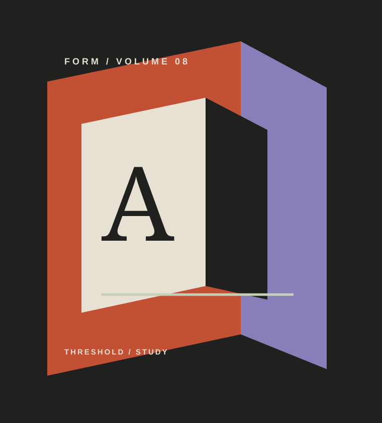

01 / THRESHOLD
Public architecture exhibition / 2026–27
The city waits at the edge.
Forms of Arrival follows the spatial decisions that turn a threshold into a public beginning.
Plan a visit
Every entrance edits the city.
Two rooms follow the line between arrival and return: where a building first speaks, and where a route stays with you.
Constructed arrivals.
Two studies / one edge
02 / RETURN
What remains after the route is over.
Come with a place in mind.
01Gallery 04
Jalan Cikini Raya 73, Jakarta
0214 Sep — 18 Jan
Tuesday–Sunday, 10.00–20.00
03Daily room talk
17.00 / limited to 30 visitors
04Admission
Reserve a timed entry before arrival
Meet the city at its edge.
Forms of Arrival / Gallery 04 / 14 Sep — 18 Jan